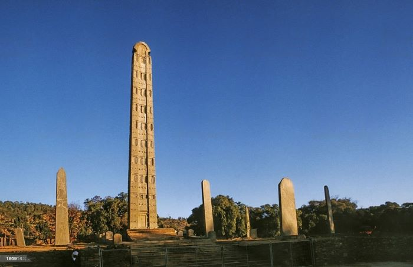

Dalol to Dashen

Dashen
Dallol

Top 5 Mountains in Ethiopia: Vast Beauty, Ancient History and Untamed Adventure. Explore the Highest Peaks of the Unique Landscape.
| Name | Location | Height in meter |
|---|---|---|
| Ras Dashen | Amhara, North Ethiopia | 4,620 m |
| Tullu Dimtu | Bale | 4,377 m |
| Ābune Yosēf | Amhara | 4,260 m |
| Guge | SNNPR | 4,200 |
| Hay | Amhara | 4,173 |
Recomended places to be visited


Axum is an ancient city located in Ethiopia. It is believed to be the center of the Queen of Sheba's kingdom
and one of the oldest cities in Africa. It contains many ancient monolithic stelae, or obelisks, that are carved from a single solid piece of
granite and weigh up to 170 tonnes. Axum is home to the Ark of Covenant, claimed by some to be the chest containing the original Ten Commandments.
Axum is also known for its dramatic St Mary Cathedral which houses many religious artifacts such as a crown used by King Ezana. The city remains a major
pilgrimage site for Ethiopian Christians.